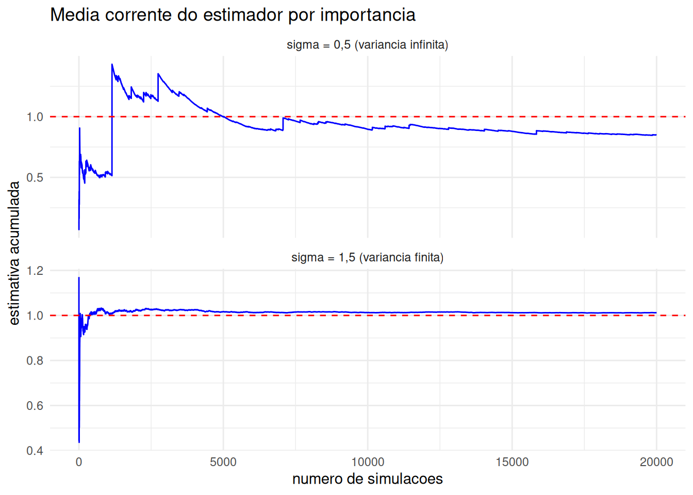
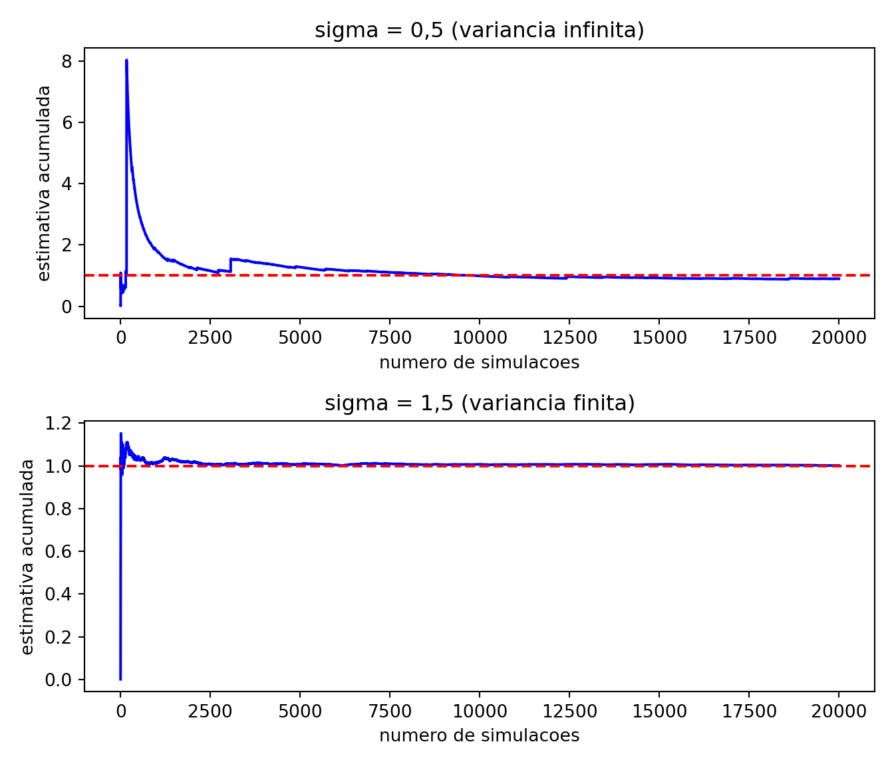

As quatro técnicas do Capítulo 10 são bem diferentes entre si, mas todas têm algo em comum: os valores continuam sendo sorteados da distribuição \(f\) do problema. O que muda é o que fazemos com eles — combinamos aos pares, corrigimos por uma variável auxiliar, substituímos por uma esperança condicional, espalhamos entre estratos.
A amostragem por importância abandona essa restrição. Ela sorteia os valores de uma outra densidade \(g\), escolhida por nós, e desfaz o viés que isso introduziria atribuindo a cada valor um peso. Trocar a densidade de onde se sorteia é uma alavanca muito mais poderosa do que qualquer uma das anteriores, e resolve dois problemas que elas não resolvem:
eventos raros: quando a quantidade de interesse depende de uma região que \(f\) quase nunca visita, o Monte Carlo usual gasta praticamente todas as simulações onde não há informação alguma;
densidades difíceis de simular: se sabemos calcular \(f(x)\) mas não sabemos gerar valores de \(f\), ainda assim podemos estimar \(\mathbb{E}[h(X)]\) — basta saber simular de alguma outra densidade.
Como bônus, uma mesma amostra pode ser reaproveitada para estimar esperanças sob várias densidades diferentes, o que é útil em análises de sensibilidade (Exercício 10).
Começamos pelo primeiro problema, que é o mais gritante.
11.1 Quando o Monte Carlo usual falha
11.1.1 Exemplo 1: a cauda da normal
Seja \(Z \sim N(0,1)\) e considere \[
p = \mathbb{P}(Z > 4{,}5) \approx 3{,}3977 \times 10^{-6}.
\]
Escrevendo \(p = \mathbb{E}[h(Z)]\) com \(h(z) = I(z > 4{,}5)\), o estimador de Monte Carlo do Capítulo 9 é simplesmente a proporção de valores simulados que superam \(4{,}5\). Vamos aplicá-lo com \(B = 100\,000\) simulações.
set.seed(0)B <-100000p_exato <-pnorm(4.5, lower.tail =FALSE)# Monte Carlo usual: proporção de valores simulados acima de 4,5z <-rnorm(B)indicadoras <-1* (z >4.5)p_mc <-mean(indicadoras)ep_mc <-sd(indicadoras) /sqrt(B)cat("Valor exato: ", p_exato, "\n")
Valor exato: 3.397673e-06
Mostrar código
cat("Monte Carlo usual: ", p_mc, "\n")
Monte Carlo usual: 0
Mostrar código
cat("Erro padrão: ", ep_mc, "\n")
Erro padrão: 0
Mostrar código
cat("Valores acima de 4,5:", sum(indicadoras), "de", B, "\n")
Valores acima de 4,5: 0 de 1e+05
Mostrar código
import numpy as npfrom scipy.stats import normnp.random.seed(0)B =100000p_exato = norm.sf(4.5) # sf é a função de sobrevivência, igual a 1 - cdf# Monte Carlo usual: proporção de valores simulados acima de 4,5z = np.random.normal(0, 1, B)indicadoras = (z >4.5).astype(float)p_mc = indicadoras.mean()ep_mc = indicadoras.std(ddof=1) / np.sqrt(B)print("Valor exato: ", p_exato)
Valor exato: 3.3976731247300535e-06
Mostrar código
print("Monte Carlo usual: ", p_mc)
Monte Carlo usual: 0.0
Mostrar código
print("Erro padrão: ", ep_mc)
Erro padrão: 0.0
Mostrar código
print("Valores acima de 4,5:", int(indicadoras.sum()), "de", B)
Valores acima de 4,5: 0 de 100000
Nenhum dos cem mil valores simulados ultrapassou \(4{,}5\), e a estimativa é exatamente zero — errada por completo, já que \(p > 0\).
Atenção: o erro padrão também mente
Quando todas as indicadoras valem zero, a variância amostral delas também vale zero, e o erro padrão estimado é \(0\). O intervalo de confiança do Capítulo 9 seria \([0,0]\): uma estimativa errada acompanhada de uma promessa de precisão absoluta.
O problema é que o erro padrão é estimado com a mesma amostra que não viu o evento. Sempre que uma quantidade depende de uma região raramente visitada, o diagnóstico usual perde a validade — é preciso desconfiar antes, olhando quantas simulações efetivamente caíram na região de interesse.
Não é questão de azar. Para o estimador \(\hat{p}\) da proporção, \(\text{Var}(\hat{p}) = p(1-p)/B\), de modo que o erro relativo é
O que importa não é \(B\), e sim o produto \(Bp\) — o número esperado de simulações que caem na região de interesse. Para obter um erro relativo de \(10\%\) são necessárias \(B \approx 100/p \approx 2{,}9 \times 10^7\) simulações; para \(p = 10^{-9}\), seriam \(10^{11}\). O método não escala.
A raiz do problema é o sorteio, não o estimador: praticamente todas as \(B\) simulações caem onde \(h\) vale zero e não carregam informação nenhuma sobre \(p\). A saída é sortear em outro lugar.
11.2 A ideia da amostragem por importância
Queremos estimar \(\theta = \mathbb{E}[h(X)]\), com \(X\) de densidade \(f\). Seja \(g\) uma outra densidade, chamada proposta (ou densidade de importância). Multiplicando e dividindo o integrando por \(g(x)\),
em que \(Y\) tem densidade \(g\) e o índice em \(\mathbb{E}_g\) lembra sob qual densidade a esperança é tomada. A conta é elementar, mas a consequência não é: \(\theta\), que era uma esperança sob \(f\), virou uma esperança sob \(g\) — e podemos estimá-la simulando de \(g\).
Definição: pesos de importância
Dadas a densidade alvo \(f\) e a proposta \(g\), o peso de importância de um ponto \(y\) é
\[
w(y) = \frac{f(y)}{g(y)} .
\]
O peso mede o quanto o ponto \(y\) foi sorteado “em excesso” ou “em falta” em relação a \(f\): onde \(g > f\), os pontos aparecem demais e são descontados (\(w < 1\)); onde \(g < f\), aparecem de menos e são inflados (\(w > 1\)).
Proposição: o estimador por importância
Sejam \(Y_1, \dots, Y_B\) i.i.d. com densidade \(g\), e suponha que \(g(y) > 0\) sempre que \(h(y)f(y) \neq 0\). O estimador por amostragem por importância
o que dá \(\mathbb{E}[\hat{\theta}_{\text{IS}}] = \theta\). Como as parcelas são independentes, a variância da média é a variância de uma parcela dividida por \(B\), e
Comparando com a variância do Monte Carlo usual, \(\frac{1}{B}\{\int h(x)^2 f(x)\,dx - \theta^2\}\), vê-se que os dois estimadores diferem apenas na integral do segundo momento: onde um tem \(h^2 f\), o outro tem \(h^2 f^2/g\). Tudo se resume, portanto, a escolher \(g\) que torne \(\int h^2 f^2 / g\) pequena — e é a isso que voltaremos na próxima seção.
Atenção: o suporte de \(g\) não pode ter buracos
A condição “\(g(y) > 0\) sempre que \(h(y)f(y) \neq 0\)” não é uma tecnicalidade. Se existir uma região onde \(h f\) não se anula mas \(g\) vale zero, essa região nunca será sorteada, e a contribuição dela para a integral desaparece silenciosamente: o estimador converge, com erro padrão pequeno e ar de confiabilidade, para o valor errado.
Um caso concreto: usar \(g = \text{Unif}(0,1)\) para estimar \(\mathbb{E}[X]\) com \(X \sim \text{Exp}(1)\). Todo o intervalo \((1,\infty)\) é ignorado.
Pseudo-algoritmo: amostragem por importância
Para estimar \(\theta = \mathbb{E}[h(X)]\), com \(X\) de densidade \(f\):
Escolha uma proposta \(g\) que saiba simular, com \(g > 0\) onde \(hf \neq 0\).
Gere \(Y_1, \dots, Y_B\) independentes com densidade \(g\).
Calcule os pesos \(w_i = f(Y_i)/g(Y_i)\) e as parcelas \(A_i = w_i\, h(Y_i)\).
Devolva \[
\hat{\theta}_{\text{IS}} = \frac{1}{B}\sum_{i=1}^B A_i,
\] com erro padrão \(\hat{\sigma}_A/\sqrt{B}\), em que \(\hat{\sigma}_A\) é o desvio padrão amostral dos \(A_i\).
Note que o passo 4 é o de sempre: uma média de \(B\) valores i.i.d., com o erro padrão do Capítulo 9. A única novidade está em quais valores entram na média.
Parentesco com o método da rejeição
O método da rejeição do Capítulo 6 também parte de uma proposta \(g\) e de valores simulados dela. A diferença está no que se faz com cada valor:
a rejeição decide, no sorteio de uma moeda, se aceita ou descarta cada ponto; os pontos aceitos formam uma amostra genuína de \(f\), e todo o resto do trabalho é jogado fora;
a amostragem por importância não descarta nada: cada ponto entra na conta, ponderado por \(w_i\).
A rejeição exige que \(f/g\) seja limitada por uma constante \(M\) conhecida; a amostragem por importância não exige nada além do suporte, embora funcione muito melhor quando \(f/g\) é razoavelmente limitada. Em compensação, a rejeição devolve uma amostra de \(f\), que serve para qualquer finalidade, enquanto a amostragem por importância devolve apenas uma estimativa (Exercício 7).
11.3 A escolha da proposta
Nem toda proposta serve, e a diferença entre uma boa e uma ruim é enorme. Há um resultado que diz exatamente qual é a melhor.
Proposição: a proposta ótima
Entre todas as densidades \(g\) admissíveis, a que minimiza \(\text{Var}(\hat{\theta}_{\text{IS}})\) é
Se, além disso, \(h \geq 0\), então \(g^* = h f / \theta\) e o estimador tem variância zero: todos os pesos ficam iguais e \(\hat{\theta}_{\text{IS}} = \theta\) em qualquer simulação.
Demonstração
Para qualquer \(g\) admissível, o segundo momento da parcela satisfaz, pela desigualdade de Jensen (ou simplesmente porque variância é não negativa),
e note que o lado direito não depende de \(g\). Basta então verificar que \(g^*\) atinge esse limite. Escrevendo \(c = \int |h|f\), temos \(g^* = |h|f/c\) e
Logo \(g^*\) minimiza o segundo momento e, como \(\theta\) é o mesmo para todas as propostas, também minimiza a variância. Quando \(h \geq 0\) tem-se \(c = \int h f = \theta\), e o segundo momento vale \(\theta^2\): a variância é \(\theta^2 - \theta^2 = 0\). \(\square\)
O resultado é ao mesmo tempo perfeito e inútil. Perfeito porque exibe uma proposta com variância zero; inútil porque essa proposta depende de \(\int |h|f\), que é essencialmente a quantidade que queremos estimar. Se soubéssemos \(g^*\), não precisaríamos simular.
O valor da proposição é servir de bússola. Ela diz que a proposta deve ter formato parecido com \(|h| f\): colocar massa onde o produto \(|h(x)|f(x)\) é grande e pouca massa onde ele é pequeno. Na prática, escolhemos uma família de densidades que saibamos simular — exponenciais, normais, gamas — e ajustamos os parâmetros para imitar \(|h| f\).
Atenção: a cauda de \(g\) não pode ser leve demais
A variância do estimador envolve \(\int h^2 f^2 / g\), com \(g\)no denominador. Se \(g\) decair mais rápido que \(|h| f\) na cauda, essa razão explode e a integral pode divergir: a variância fica infinita, mesmo que a variância do Monte Carlo usual seja finita.
E o pior é o sintoma. Com variância infinita o estimador continua não viesado e a Lei dos Grandes Números continua valendo, de modo que as estimativas parecem se estabilizar — até que um único ponto muito longe na cauda receba um peso enorme e desloque a média inteira. O Teorema Central do Limite não vale, e o erro padrão calculado pela fórmula usual não significa nada.
A regra prática: a proposta deve ter cauda mais pesada que a do alvo. Na dúvida, prefira uma \(g\) dispersa demais a uma \(g\) concentrada demais.
11.3.1 Exemplo 2: quando a cauda da proposta é leve demais
Vamos estimar algo perfeitamente comum: \(\theta = \mathbb{E}[X^2] = 1\), com \(X \sim N(0,1)\). Aqui não há evento raro nenhum, e o Monte Carlo usual funciona bem, com \(\text{Var}(X^2) = \mathbb{E}[X^4] - 1 = 2\). Usaremos como proposta uma \(N(0,\sigma^2)\), para dois valores de \(\sigma\).
O segundo momento da parcela é, com \(\varphi_\sigma\) denotando a densidade da \(N(0,\sigma^2)\),
que converge se e somente se \(1 - \frac{1}{2\sigma^2} > 0\), isto é, se \(\sigma > 1/\sqrt{2} \approx 0{,}707\). Tomamos \(\sigma = 0{,}5\) (variância infinita) e \(\sigma = 1{,}5\) (variância finita) e olhamos a média corrente, ou seja, a estimativa que teríamos após cada número de simulações.
library(ggplot2)set.seed(2)B <-20000# Devolve as parcelas A_i = Y_i^2 * w_i do estimador por importância,# com proposta N(0, sigma^2) e alvo N(0,1)parcelas_is <-function(B, sigma) { y <-rnorm(B, mean =0, sd = sigma) w <-dnorm(y) /dnorm(y, mean =0, sd = sigma) # pesos f(y)/g(y) y^2* w}a_leve <-parcelas_is(B, sigma =0.5) # cauda leve demaisa_ok <-parcelas_is(B, sigma =1.5) # cauda suficientemente pesada# Média corrente: a estimativa que teríamos após i simulaçõesmedia_corrente <-function(a) cumsum(a) /seq_along(a)dados <-data.frame(i =rep(1:B, 2),media =c(media_corrente(a_leve), media_corrente(a_ok)),proposta =rep(c("sigma = 0,5 (variancia infinita)","sigma = 1,5 (variancia finita)"), each = B))ggplot(dados, aes(x = i, y = media)) +geom_line(color ="blue") +geom_hline(yintercept =1, color ="red", linetype ="dashed") +facet_wrap(~ proposta, ncol =1, scales ="free_y") +labs(x ="numero de simulacoes", y ="estimativa acumulada",title ="Media corrente do estimador por importancia") +theme_minimal()

Mostrar código
import numpy as npimport matplotlib.pyplot as pltfrom scipy.stats import normnp.random.seed(2)B =20000# Devolve as parcelas A_i = Y_i^2 * w_i do estimador por importância,# com proposta N(0, sigma^2) e alvo N(0,1)def parcelas_is(B, sigma): y = np.random.normal(0, sigma, B) w = norm.pdf(y) / norm.pdf(y, 0, sigma) # pesos f(y)/g(y)return y**2* wa_leve = parcelas_is(B, 0.5) # cauda leve demaisa_ok = parcelas_is(B, 1.5) # cauda suficientemente pesada# Média corrente: a estimativa que teríamos após i simulaçõesdef media_corrente(a):return np.cumsum(a) / np.arange(1, len(a) +1)fig, eixos = plt.subplots(2, 1, figsize=(7, 6))titulos = ["sigma = 0,5 (variancia infinita)","sigma = 1,5 (variancia finita)"]for eixo, a, titulo inzip(eixos, [a_leve, a_ok], titulos): eixo.plot(media_corrente(a), color='blue') eixo.axhline(1, color='red', linestyle='--') eixo.set_title(titulo) eixo.set_xlabel('numero de simulacoes') eixo.set_ylabel('estimativa acumulada')fig.tight_layout()plt.show()

O painel de cima é a assinatura da variância infinita: longos trechos de aparente estabilidade, interrompidos por saltos que jogam a estimativa para longe. O painel de baixo é o comportamento esperado de uma média de variáveis com variância finita.
E há um segundo recado, menos óbvio. Para \(\sigma = 1{,}5\) a variância da parcela é aproximadamente \(0{,}49\), contra \(2\) do Monte Carlo usual — uma redução de quatro vezes. A amostragem por importância não serve apenas para eventos raros: aqui ela ganha porque \(x^2 f(x)\) é uma função com duas corcovas afastadas da origem, e uma normal mais dispersa se parece mais com ela do que a própria \(N(0,1)\). O valor de \(\sigma\) que minimiza a variância é objeto do Exercício 5.
11.4 De volta aos eventos raros
11.4.1 Exemplo 3: \(\mathbb{P}(Z > 4{,}5)\) por amostragem por importância
Voltemos ao Exemplo 1. Aqui \(h(z) = I(z > 4{,}5) \geq 0\), então a proposição diz que a proposta ótima é
a normal padrão truncada em \(4{,}5\) — que não sabemos simular sem conhecer \(p\), justamente o que queremos estimar (Exercício 12). Mas a bússola já ajuda: a proposta deve viver inteiramente em \((4{,}5, \infty)\) e ter, ali, o formato de \(\varphi\). Escrevendo \(y = 4{,}5 + s\),
— uma exponencial de taxa \(\lambda\) deslocada para \(4{,}5\) — e sugere ainda a escolha \(\lambda = 4{,}5\). Vamos comparar \(\lambda = 1\) (a escolha ingênua) com \(\lambda = 4{,}5\).
Como \(h(y) = 1\) para todo \(y\) gerado, o estimador é simplesmente a média dos pesos:
set.seed(1)B <-100000limiar <-4.5# Amostragem por importância com proposta exponencial de taxa lambda,# deslocada para começar no limiaris_exp_deslocada <-function(B, lambda, limiar) { s <-rexp(B, rate = lambda) # S ~ Exp(lambda) y <- limiar + s # Y = limiar + S, sempre acima do limiar g <- lambda *exp(-lambda * s) # densidade da proposta avaliada em y w <-dnorm(y) / g # pesos; h(y) = 1, pois y > limiarlist(est =mean(w), ep =sd(w) /sqrt(B), pesos = w)}is_1 <-is_exp_deslocada(B, lambda =1, limiar)is_45 <-is_exp_deslocada(B, lambda =4.5, limiar)# Monte Carlo usual, com o mesmo número de simulaçõesz <-rnorm(B)p_mc <-mean(1* (z > limiar))ep_mc <-sd(1* (z > limiar)) /sqrt(B)mostra <-function(rotulo, est, ep) {# quando a estimativa é zero, o erro relativo não está definido rel <-if (est >0) sprintf("%.4f", ep / est) else"---"cat(sprintf("%-20s est = %.4e EP = %.4e EP/est = %s\n", rotulo, est, ep, rel))}cat(sprintf("Valor exato: %.4e\n\n", p_exato))
Valor exato: 3.3977e-06
Mostrar código
mostra("Monte Carlo usual", p_mc, ep_mc)
Monte Carlo usual est = 0.0000e+00 EP = 0.0000e+00 EP/est = ---
Mostrar código
mostra("IS, lambda = 1", is_1$est, is_1$ep)
IS, lambda = 1 est = 3.3992e-06 EP = 1.3987e-08 EP/est = 0.0041
Mostrar código
mostra("IS, lambda = 4,5", is_45$est, is_45$ep)
IS, lambda = 4,5 est = 3.3983e-06 EP = 9.1122e-10 EP/est = 0.0003
Mostrar código
import numpy as npfrom scipy.stats import normnp.random.seed(1)B =100000limiar =4.5# Amostragem por importância com proposta exponencial de taxa lambda,# deslocada para começar no limiardef is_exp_deslocada(B, lam, limiar): s = np.random.exponential(scale=1/lam, size=B) # S ~ Exp(lam) y = limiar + s # Y = limiar + S, sempre acima do limiar g = lam * np.exp(-lam * s) # densidade da proposta avaliada em y w = norm.pdf(y) / g # pesos; h(y) = 1, pois y > limiarreturn {"est": w.mean(), "ep": w.std(ddof=1) / np.sqrt(B), "pesos": w}is_1 = is_exp_deslocada(B, 1.0, limiar)is_45 = is_exp_deslocada(B, 4.5, limiar)# Monte Carlo usual, com o mesmo número de simulaçõesz = np.random.normal(0, 1, B)ind = (z > limiar).astype(float)p_mc, ep_mc = ind.mean(), ind.std(ddof=1) / np.sqrt(B)def mostra(rotulo, est, ep):# quando a estimativa é zero, o erro relativo não está definido rel =f"{ep/est:.4f}"if est >0else"---"print(f"{rotulo:<20s} est = {est:.4e} EP = {ep:.4e} EP/est = {rel}")print(f"Valor exato: {p_exato:.4e}\n")
Valor exato: 3.3977e-06
Mostrar código
mostra("Monte Carlo usual", p_mc, ep_mc)
Monte Carlo usual est = 1.0000e-05 EP = 1.0000e-05 EP/est = 1.0000
Mostrar código
mostra("IS, lambda = 1", is_1["est"], is_1["ep"])
IS, lambda = 1 est = 3.4198e-06 EP = 1.4012e-08 EP/est = 0.0041
IS, lambda = 4,5 est = 3.3982e-06 EP = 9.0241e-10 EP/est = 0.0003
A coluna EP/est é o erro relativo, e é onde a história aparece. As duas propostas produzem estimativas corretas, mas com \(\lambda = 4{,}5\) o erro relativo é mais de dez vezes menor que com \(\lambda = 1\) — ou seja, mais de cem vezes menos variância, apenas por trocar um parâmetro da mesma família. Ambas são incomparavelmente melhores que o Monte Carlo usual, que com as mesmas \(10^5\) simulações acerta no máximo a ordem de grandeza, quando acerta.
Deslocar a proposta é a receita para caudas
O padrão do Exemplo 3 se repete em quase todo problema de evento raro: se a região de interesse é \(\{X > a\}\), procure uma proposta centrada em \(a\), e não na média de \(f\). Isso vale tanto para a família exponencial deslocada usada aqui quanto para propostas do tipo \(N(\mu, 1)\) com \(\mu \approx a\) (Exercício 13) ou para somas de variáveis (Exercício 8).
A técnica geral por trás disso chama-se tilting exponencial, e consiste em trocar \(f(x)\) por \(f(x)e^{tx}/\mathbb{E}[e^{tX}]\), escolhendo \(t\) de modo que a nova densidade tenha média \(a\).
11.5 Diagnóstico: o tamanho amostral efetivo
Como saber, olhando apenas para a saída da simulação, se a proposta foi boa? O sintoma de uma proposta ruim é sempre o mesmo: poucos pesos muito grandes dominam a soma, e as demais simulações praticamente não contribuem. Se dez pontos entre um milhão respondem por quase toda a estimativa, a amostra efetiva tem tamanho dez, não um milhão.
Definição: tamanho amostral efetivo
Dados os pesos \(w_1, \dots, w_B\), o tamanho amostral efetivo (TAE) é
Ele satisfaz \(1 \leq \text{TAE} \leq B\), com \(\text{TAE} = B\) quando todos os pesos são iguais e \(\text{TAE} = 1\) quando um único peso é não nulo.
A interpretação é que a estimativa por importância com \(B\) pontos tem precisão comparável à de uma estimativa por Monte Carlo usual com \(\text{TAE}\) pontos sorteados de \(f\) (Exercício 14). É uma regra de bolso, não um teorema — mas é um alarme barato e eficaz: um TAE muito menor que \(B\) diz que a proposta não cobre bem o alvo.
cat("TAE com lambda = 4,5:", round(tae(is_45$pesos), 1), "de", B, "\n")
TAE com lambda = 4,5: 99286.2 de 1e+05
Mostrar código
def tae(w):return w.sum()**2/ (w**2).sum()print("TAE com lambda = 1: ", round(tae(is_1["pesos"]), 1), "de", B)
TAE com lambda = 1: 37329.6 de 100000
Mostrar código
print("TAE com lambda = 4,5:", round(tae(is_45["pesos"]), 1), "de", B)
TAE com lambda = 4,5: 99299.8 de 100000
O diagnóstico reproduz o que já sabíamos do erro padrão: com \(\lambda = 1\) pouco mais de um terço das simulações é efetivamente aproveitado, enquanto com \(\lambda = 4{,}5\) a amostra efetiva é quase \(B\) inteiro.
Atenção: o TAE não detecta buracos no suporte
O TAE só enxerga os pontos que foram sorteados. Se \(g\) ignora completamente uma região onde \(hf\) é grande, nenhum peso grande aparece — e o TAE fica confortavelmente alto, apontando para uma estimativa errada. Ele detecta pesos desbalanceados, não regiões esquecidas.
11.6 Ajustando os parâmetros da proposta
Quando a proposta pertence a uma família paramétrica, às vezes é possível escolher o parâmetro analiticamente, minimizando a variância. O exemplo a seguir faz essa conta até o fim.
11.6.1 Exemplo 4: \(\mathbb{E}[\sqrt{X}]\) com proposta exponencial
Queremos estimar \[
\theta = \mathbb{E}[\sqrt{X}], \qquad X \sim \text{Exp}(1),
\] que equivale à integral \[
\theta = \int_0^\infty \sqrt{x}\, e^{-x}\, dx = \Gamma\!\left( \tfrac{3}{2} \right)
= \frac{\sqrt{\pi}}{2} \approx 0{,}8862 .
\]
O Monte Carlo direto — simular \(X \sim \text{Exp}(1)\) e promediar \(\sqrt{X}\) — tem variância \[
\text{Var}(\sqrt{X}) = \mathbb{E}[X] - \theta^2 = 1 - \frac{\pi}{4}
\approx 0{,}2146 .
\]
Tomemos como proposta \(g_\lambda(x) = \lambda e^{-\lambda x}\), \(x > 0\), isto é, uma \(\text{Exp}(\lambda)\). As parcelas do estimador são
e o estimador é \(\hat{\theta}_{\text{IS}} = \frac1B \sum_{i=1}^B A_\lambda(X_i)\), com \(X_i \sim \text{Exp}(\lambda)\). Note que \(\lambda = 1\) devolve \(g = f\), \(A_1(x) = \sqrt{x}\), e portanto o Monte Carlo direto: ele é um caso particular da amostragem por importância.
Para escolher \(\lambda\), calculamos o segundo momento das parcelas sob \(g_\lambda\):
um ganho de \(0{,}2146 / 0{,}05835 \approx 3{,}68\) vezes em relação ao Monte Carlo direto. O sentido da resposta é o esperado: \(\lambda^\star < 1\) significa uma exponencial mais dispersa que a original, deslocando massa para valores maiores de \(x\) — que é onde \(\sqrt{x}e^{-x}\) tem seu máximo.
Pseudo-algoritmo: o estimador do Exemplo 4
Fixe \(\lambda\) (use \(\lambda = 2/3\) para o mínimo da variância).
import numpy as npnp.random.seed(1)theta_exato = np.sqrt(np.pi) /2B =10000def is_exp(B, lam): x = np.random.exponential(scale=1/lam, size=B) a = np.sqrt(x) * np.exp(-x) / (lam * np.exp(-lam * x))return {"est": a.mean(), "ep": a.std(ddof=1) / np.sqrt(B)}out_1 = is_exp(B, 1.0) # equivale ao Monte Carlo diretoout_opt = is_exp(B, 2/3) # proposta ótima na famíliaprint(f"Valor exato : {theta_exato:.6f}")
Valor exato : 0.886227
Mostrar código
print(f"IS Exp(1) (= MC) : {out_1['est']:.6f} EP = {out_1['ep']:.5f}")
IS Exp(1) (= MC) : 0.881945 EP = 0.00459
Mostrar código
print(f"IS Exp(2/3) (ótima) : {out_opt['est']:.6f} EP = {out_opt['ep']:.5f}")
IS Exp(2/3) (ótima) : 0.887836 EP = 0.00243
Mostrar código
print(f"Fator de redução : {(out_opt['ep']/out_1['ep'])**2:.4f}"f" (teórico: {0.05835/0.21460:.4f})")
Fator de redução : 0.2797 (teórico: 0.2719)
11.7 Amostragem por importância autonormalizada
Até aqui supusemos que sabemos calcular \(f(x)\). Em muitas aplicações, porém, só conhecemos \(f\)a menos de uma constante multiplicativa: temos uma função \(q(x) \geq 0\) com
\[
f(x) = \frac{q(x)}{Z}, \qquad Z = \int q(u)\, du \ \text{ desconhecida}.
\]
Isso é a regra, não a exceção. Densidades condicionais, distribuições truncadas e sobretudo distribuições a posteriori em inferência bayesiana quase sempre chegam nessa forma, porque a constante \(Z\) é justamente uma integral que não sabemos calcular.
A saída é estimar \(Z\) com a mesma amostra. Definindo os pesos não normalizados\(w_i = q(Y_i)/g(Y_i)\), temos, pela Lei dos Grandes Números,
Ele é uma média ponderada dos valores \(h(Y_i)\), com pesos \(\bar{w}_i\) que somam \(1\).
Por ser um quociente de duas médias, \(\hat{\theta}_{\text{AN}}\) converge para \(\theta\) pela Lei dos Grandes Números, mas não é não viesado: a esperança de um quociente não é o quociente das esperanças. O viés é da ordem de \(1/B\) — desprezível diante do erro padrão, que é da ordem de \(1/\sqrt{B}\), exatamente como acontecia com a constante estimada das variáveis de controle no Capítulo 10.
Pseudo-algoritmo: amostragem por importância autonormalizada
Escolha \(g\) que saiba simular, com \(g > 0\) onde \(q > 0\).
Gere \(Y_1, \dots, Y_B\) independentes com densidade \(g\).
Calcule os pesos não normalizados \(w_i = q(Y_i)/g(Y_i)\) e normalize: \(\bar{w}_i = w_i / \sum_j w_j\).
Verifique o TAE, \(\left(\sum_i w_i\right)^2 / \sum_i w_i^2\), antes de acreditar no resultado.
Um bônus: probabilidades saem de graça
Tomando \(h(x) = I(x \in A)\), o estimador vira a soma dos pesos normalizados dos pontos que caíram em \(A\). Ou seja, uma única amostra ponderada permite estimar a média, a variância, quantis e qualquer probabilidade sob \(f\) — sem repetir a simulação.
11.7.1 Exemplo 5: uma densidade conhecida a menos de constante
e suponha que queiramos \(\mathbb{E}_f[\theta]\) e \(\mathbb{P}_f(\theta > 0{,}7)\).
De onde vem essa densidade
Ela é a distribuição a posteriori de uma probabilidade de sucesso \(\theta\) com distribuição a priori \(\text{Unif}(0,1)\), depois de observar \(13\) sucessos em \(20\) ensaios de Bernoulli: \(q(\theta)\) é exatamente a verossimilhança. Neste caso sabemos que \(Z = B(14,8)\) e que \(f\) é uma \(\text{Beta}(14,8)\) — o que nos dá um valor exato para conferir. Em problemas reais, \(Z\) é uma integral intratável, e é aí que o método é indispensável.
Vamos comparar duas propostas: a \(\text{Unif}(0,1)\), que ignora tudo o que sabemos, e uma \(N(0{,}65;\ 0{,}1^2)\), ajustada grosseiramente ao formato de \(q\) (o máximo de \(q\) está em \(13/20 = 0{,}65\)).
As duas propostas acertam a média com boa precisão, mas o TAE denuncia a diferença de qualidade: a \(\text{Unif}(0,1)\) desperdiça a maior parte das simulações em regiões onde \(q\) é praticamente zero, enquanto a normal ajustada aproveita quase todas. A diferença fica mais visível na estimativa de \(\mathbb{P}_f(\theta > 0{,}7)\), que depende de uma região de menor probabilidade e por isso é mais sensível ao desperdício.
Atenção: autonormalizar não conserta uma proposta ruim
A normalização pelos pesos garante que a estimativa seja uma média ponderada legítima — em particular, uma probabilidade estimada nunca sai de \([0,1]\). Isso dá uma falsa sensação de segurança: se \(g\) não cobre bem \(q\), o resultado continua ruim, apenas de forma menos escandalosa. O TAE é o que revela o problema.
11.8 Exercícios
Exercício 1. Seja \(Z \sim N(0,1)\) e \(p = \mathbb{P}(Z > 5)\).
Estime \(p\) por Monte Carlo usual com \(B = 10^6\). Quantas simulações caíram acima de \(5\)? Quantas seriam necessárias, em média, para que caíssem \(100\)?
Estime \(p\) por amostragem por importância com a proposta exponencial deslocada \(g_\lambda(y) = \lambda e^{-\lambda(y-5)}\), \(y > 5\), para \(\lambda \in \{1, 3, 5, 8\}\), sempre com \(B = 10^5\). Compare os erros relativos.
Compare as estimativas com o valor exato (pnorm(5, lower.tail = FALSE) em R, scipy.stats.norm.sf(5) em Python) e calcule o TAE de cada proposta.
O melhor \(\lambda\) do item (b) é próximo de \(5\). Explique por quê, usando o argumento de que \(\varphi(5+s)/\varphi(5) \approx e^{-5s}\).
Exercício 2. Estime \(\theta = \int_0^2 \sqrt{x}\, e^{-x}\, dx\) por amostragem por importância com duas propostas diferentes:
\(g_1 = \text{Unif}(0,2)\);
\(g_2\) = a densidade \(\text{Exp}(1)\)truncada ao intervalo \((0,2)\), isto é, \(g_2(x) = e^{-x}/(1 - e^{-2})\) para \(0 < x < 2\). (Simule-a pelo método da inversão do Capítulo 4.)
Justifique, antes de rodar o código, qual das duas deve ser melhor, esboçando \(|h(x)|f(x)\) com \(h(x) = \sqrt{x}\) e \(f\) a densidade que cada proposta imita. Depois compare os erros padrão obtidos e verifique se a previsão se confirmou.
Use integrate (R) ou scipy.integrate.quad (Python) como valor de referência.
Exercício 3. Seja \(X \sim \text{Exp}(1)\) e \(\theta = \mathbb{E}[\log(1+X)]\).
Estime \(\theta\) por Monte Carlo usual com \(B = 10^4\) e calcule o erro padrão.
Faça o gráfico de \(h(x)f(x) = \log(1+x)e^{-x}\) e verifique que o máximo está em torno de \(x \approx 0{,}76\) (a equação a resolver é \(1/(1+x) = \log(1+x)\)).
Proponha uma densidade \(g\) com formato parecido — por exemplo uma \(\text{Gama}(2, \beta)\), cuja moda é \(1/\beta\) — e implemente o estimador por importância.
O ganho aqui é modesto, bem menor que nos exemplos de eventos raros. Explique por quê, comparando o formato de \(h f\) com o de \(f\).
Exercício 4. Sejam \(f\) e \(g\) densidades com \(g > 0\) onde \(f > 0\), e \(w(Y) = f(Y)/g(Y)\) com \(Y \sim g\).
Mostre que \(\mathbb{E}_g[w(Y)] = 1\).
Mostre que \(\text{Var}_g(w(Y)) = \int \frac{f(x)^2}{g(x)}\,dx - 1\).
A quantidade do item (b) é a divergência do qui-quadrado entre \(f\) e \(g\), e vale zero se e somente se \(f = g\). Verifique numericamente os itens (a) e (b) para \(f = N(0,1)\) e \(g = N(0,\sigma^2)\), com \(\sigma \in \{0{,}8;\ 1;\ 2\}\).
Explique por que um valor grande em (b) implica um TAE pequeno.
Exercício 5. Volte ao Exemplo 2: \(\theta = \mathbb{E}[X^2] = 1\) com \(X \sim N(0,1)\) e proposta \(N(0,\sigma^2)\).
Mostre que, escrevendo \(c = 1 - \frac{1}{2\sigma^2}\), o segundo momento da parcela é \[
\mathbb{E}_g[A^2] = \frac{3\sigma}{4c^2\sqrt{2c}}, \qquad \sigma > 1/\sqrt{2}.
\] (Dica: \(\int_{-\infty}^{\infty} x^4 e^{-ax^2}\,dx = \frac{3}{4a^2}\sqrt{\pi/a}\).)
Minimize essa expressão e conclua que \(\sigma^\star = \sqrt{3}\).
Calcule o fator de redução de variância em relação ao Monte Carlo usual e verifique-o empiricamente com \(B = 10^5\).
Faça o gráfico de \(\text{Var}(A)\) contra \(\sigma \in (0{,}71;\ 4)\) e observe o que acontece quando \(\sigma \to 1/\sqrt{2}\).
Exercício 6. Uma forma de nunca cair no problema da cauda leve demais é usar uma proposta de cauda muito pesada. Tome \(f = N(0,1)\), \(h(x) = x^4\) e como proposta a densidade de Cauchy padrão, \(g(x) = \frac{1}{\pi(1+x^2)}\).
Mostre que os pesos \(w(x) = \pi(1+x^2)\varphi(x)\) são limitados e conclua que a variância do estimador é finita.
Estime \(\mathbb{E}[X^4] = 3\) com \(B = 10^5\) e compare o erro padrão com o do Monte Carlo usual.
A proposta é segura, mas é melhor ou pior que o Monte Carlo usual neste problema? Explique o resultado em termos do formato de \(|h|f\).
Exercício 7. Seja \(f\) a densidade da meia-normal, \(f(x) = \sqrt{2/\pi}\, e^{-x^2/2}\) para \(x > 0\), e \(g(x) = e^{-x}\) a densidade \(\text{Exp}(1)\), como no Capítulo 6.
Mostre que \(f(x)/g(x) \leq M = \sqrt{2e/\pi} \approx 1{,}3155\) e que a igualdade ocorre em \(x = 1\).
Estime \(\mathbb{E}_f[X] = \sqrt{2/\pi}\) de duas maneiras, ambas partindo de \(B = 10^4\) valores gerados de \(g\): pelo método da rejeição (aceitando cerca de \(B/M\) deles e tirando a média simples) e por amostragem por importância (usando todos os \(B\)).
Compare os erros padrão. Qual método aproveita melhor o mesmo esforço computacional?
Cite uma situação em que ainda assim se prefere a rejeição.
Estime \(\theta\) por Monte Carlo usual com \(B = 10^6\) e comente o resultado.
Considere a proposta que gera \(X_1, \dots, X_{10}\) i.i.d. \(\text{Exp}(\lambda)\), com \(\lambda < 1\). Mostre que o peso de uma configuração \((x_1,\dots,x_{10})\) é \[
w(x_1,\dots,x_{10}) = \prod_{i=1}^{10} \frac{e^{-x_i}}{\lambda e^{-\lambda x_i}}
= \lambda^{-10}\, e^{-(1-\lambda)\sum_i x_i}.
\]
Implemente o estimador com \(\lambda = 1/4\) e \(B = 10^5\). Compare com o valor exato, \(\mathbb{P}(W > 40)\) com \(W \sim \text{Gama}(10,1)\) (pgamma em R, scipy.stats.gamma em Python).
Explique a escolha \(\lambda = 10/40\): sob a proposta, qual é a média de \(S\)? Repita com \(\lambda \in \{1/2;\ 1/4;\ 1/8\}\) e veja qual dá o menor erro relativo.
Exercício 9. Volte ao Exemplo 5, com \(q(\theta) = \theta^{13}(1-\theta)^7\).
Reproduza as estimativas com as duas propostas do exemplo.
Acrescente uma terceira proposta, \(N(0{,}5;\ 0{,}05^2)\), e compare o TAE e o erro da média estimada. O que deu errado?
Acrescente uma quarta proposta, \(\text{Beta}(10,6)\), e compare com as demais.
Repita o exercício com \(q(\theta) = \theta^{130}(1-\theta)^{70}\) (o mesmo formato, com \(200\) ensaios em vez de \(20\)). O que acontece com o TAE da proposta \(\text{Unif}(0,1)\)? Que lição isso dá sobre amostragem por importância em problemas com muita informação?
Exercício 10. Uma vantagem prática da amostragem por importância é reaproveitar uma única amostra para vários alvos. Sejam \(f_\mu\) a densidade da \(N(\mu, 1)\) e \(h(x) = x^2\), de modo que \(\theta(\mu) = \mathbb{E}_{f_\mu}[X^2] = 1 + \mu^2\).
Gere uma única amostra \(Y_1, \dots, Y_B\) de \(g = N(0, 2^2)\), com \(B = 10^4\).
Usando essa mesma amostra, estime \(\theta(\mu)\) para \(\mu \in \{-1, 0, 1, 2, 3, 4\}\), recalculando apenas os pesos \(w_i = f_\mu(Y_i)/g(Y_i)\).
Faça o gráfico das estimativas contra \(\mu\), junto com a curva exata \(1 + \mu^2\) e com as bandas de \(\pm 2\) erros padrão.
A partir de que valor de \(\mu\) a estimativa deixa de ser confiável? Relacione com o TAE de cada \(\mu\).
Exercício 11. Suponha que a proposta \(g\) tenha suporte menor que o de \(f\): tome \(f = \text{Exp}(1)\), \(g = \text{Unif}(0,3)\) e \(h(x) = x\).
Calcule analiticamente para qual valor o estimador por importância converge, e mostre que ele não é \(\mathbb{E}[X] = 1\).
Confirme numericamente com \(B = 10^6\) e observe que o erro padrão é pequeno — o estimador converge confiantemente para o valor errado.
Calcule o TAE e verifique que ele não detecta o problema.
Como você detectaria esse erro na prática, sem conhecer a resposta?
Exercício 12. Considere de novo \(p = \mathbb{P}(Z > 4{,}5)\), com \(Z \sim N(0,1)\), e a proposta ótima \(g^*(y) = \varphi(y)I(y > 4{,}5)/p\), isto é, a normal padrão truncada em \(4{,}5\).
Mostre que, se \(U \sim \text{Unif}(0,1)\), então \(Y = \Phi^{-1}\big(1 - U\,(1 - \Phi(4{,}5))\big)\) tem densidade \(g^*\). (Em R, use qnorm(u * pnorm(4.5, lower.tail = FALSE), lower.tail = FALSE), que é numericamente mais estável.)
Gere \(B = 1000\) valores de \(g^*\), calcule os pesos \(w_i = \varphi(Y_i)/g^*(Y_i)\) e verifique que todos são iguais a \(p\): a variância é exatamente zero.
Explique por que essa proposta é inútil na prática, apesar de ótima.
Compare o histograma dos valores gerados em (b) com o dos valores gerados pela proposta exponencial deslocada com \(\lambda = 4{,}5\) do Exemplo 3. Por que a segunda funciona tão bem?
Exercício 13. (Desafio) Estime \(p = \mathbb{P}(Z > 6)\), com \(Z \sim N(0,1)\), usando propostas da família \(g_\mu = N(\mu, 1)\).
Mostre que o estimador é \(\hat{p} = \frac1B \sum_{i=1}^B I(Y_i > 6)\, \frac{\varphi(Y_i)}{\varphi(Y_i - \mu)}\), com \(Y_i \sim N(\mu,1)\), e que os pesos valem \(e^{-\mu Y_i + \mu^2/2}\).
Mostre que o segundo momento das parcelas é \[
m(\mu) = e^{\mu^2}\, \mathbb{P}(Z > 6 + \mu).
\] (Dica: verifique que \(\varphi(y-\mu)\,e^{-2\mu y} = \varphi(y+\mu)\).)
Encontre numericamente o \(\mu^\star\) que minimiza \(m(\mu)\) e mostre que a condição de primeira ordem é \(2\mu = \varphi(6+\mu)/\mathbb{P}(Z > 6+\mu)\). Argumente que \(\mu^\star \approx 6\) quando o limiar é grande.
Compare, em erro relativo, o Monte Carlo usual, a amostragem por importância com \(\mu \in \{3, 6, 9\}\) e com \(\mu^\star\).
Exercício 14. (Desafio) Este exercício justifica o tamanho amostral efetivo.
Mostre que \[
\text{TAE} = \frac{\left(\sum_i w_i\right)^2}{\sum_i w_i^2}
= \frac{B}{1 + \widehat{\text{cv}}^2(w)},
\] onde \(\widehat{\text{cv}}^2(w)\) é o quadrado do coeficiente de variação amostral dos pesos (use a versão com denominador \(B\) na variância amostral).
Conclua, usando o Exercício 4, que \(\text{TAE}/B\) converge para \(1/\big(1 + \chi^2(f \Vert g)\big)\), em que \(\chi^2(f\Vert g) = \int f^2/g - 1\).
Considere o estimador autonormalizado de \(\theta = \mathbb{E}_f[h(X)]\) e suponha \(h\) pouco correlacionada com os pesos. Argumente que sua variância é aproximadamente \(\text{Var}_f(h(X)) / \text{TAE}\), o que justifica a leitura “amostra efetiva de tamanho TAE”.
Verifique (c) numericamente para \(f = N(0,1)\), \(g = N(0, \sigma^2)\) e \(h(x) = x\), repetindo a estimação \(R = 1000\) vezes.
Exercício 15. (Desafio) A amostragem por importância defensiva protege contra o desastre do Exemplo 2. Dada uma proposta qualquer \(g_0\) e um \(\alpha \in (0,1)\), use a mistura
\[
g(x) = \alpha f(x) + (1-\alpha) g_0(x) .
\]
Descreva como simular de \(g\) (sorteie primeiro de qual das duas componentes o valor virá) e escreva os pesos.
Mostre que \(w(x) = f(x)/g(x) \leq 1/\alpha\) para todo \(x\).
Conclua que \(\mathbb{E}_g[h^2 w^2] \leq \frac{1}{\alpha}\mathbb{E}_f[h(X)^2]\), de modo que a variância é finita sempre que \(\text{Var}_f(h(X))\) for finita — qualquer que seja \(g_0\).
Aplique ao Exemplo 2 com \(g_0 = N(0;\ 0{,}5^2)\) e \(\alpha = 0{,}2\), e refaça o gráfico da média corrente. O desastre sumiu? Compare a variância resultante com a do Monte Carlo usual e comente: o que exatamente se comprou com a mistura?
Exercício 16. (Desafio) Seja \(X \sim \text{Exp}(1)\) e \(\theta = \mathbb{P}(X > t) = e^{-t}\), e considere a família de propostas \(\text{Exp}(\lambda)\) com \(0 < \lambda < 2\).
Mostre que o segundo momento das parcelas é \[
m(\lambda) = \frac{e^{-(2-\lambda)t}}{\lambda(2-\lambda)} .
\]
Mostre que a condição de primeira ordem para minimizar \(m\) leva à equação \(t\lambda^2 - 2(t+1)\lambda + 2 = 0\) e conclua que \[
\lambda^\star = \frac{t + 1 - \sqrt{t^2+1}}{t} .
\]
Verifique que \(\lambda^\star \to 1/t\) quando \(t \to \infty\) e interprete: sob a proposta ótima, qual é a média de \(X\)?
Para \(t = 10\), compare numericamente (\(B = 10^5\)) o erro relativo do Monte Carlo usual, da proposta com \(\lambda = 1/t\) e da proposta com \(\lambda^\star\). A diferença entre as duas últimas é relevante?